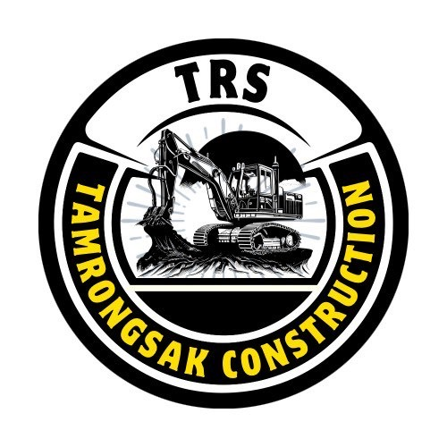

คุยพื้นที่และวางผัง
ส่งรูป พิกัด และลักษณะการใช้งาน เพื่อวางผังช่องจอดและเส้นจราจร

TRSTAMRONGSAKCONSTRUCTIONงานถนนคุณภาพ ครบจบในทีมเดียว
TRS TAMRONGSAK CONSTRUCTION
ตีเส้นช่องจอดรถ เส้นแบ่งช่องทาง และลูกศรบอกทิศทาง
วางผัง เตรียมผิว และตีเส้นด้วยสีเทอร์โมพลาสติก
งานด่วนโทรได้เลยเครื่องจักรครบเริ่มงานไว
ฟรี! เข้าดูหน้างาน ประเมินเบื้องต้น
ประเมินพื้นที่ก่อนเริ่มงาน
วางแผนเครื่องจักรให้เหมาะกับงาน
ให้คำปรึกษาและวางแผนงาน
ดูแลตั้งแต่วางผัง จนเก็บรายละเอียดงาน
ส่งรูป พิกัด และลักษณะการใช้งาน เพื่อวางผังช่องจอดและเส้นจราจร
เตรียมผิวก่อนตีเส้นและทำเครื่องหมายตามผังที่ตกลง
ตีเส้นช่องจอด เส้นขอบทาง และลูกศรบอกทิศทาง พร้อมเก็บรายละเอียดก่อนส่งมอบ
ภาพหน้างานจริง เลือกภาพเพื่อดูรายละเอียดแบบเต็มภาพ